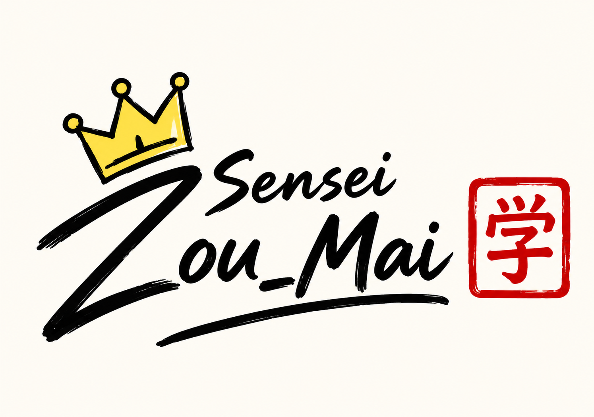

Sensei Zoumaï
Apprendre autrement, en classe comme à la maison.
Enseignant passionné par la pédagogie, la créativité et les nouvelles technologies, j’ai créé cet espace pour prolonger à la maison les activités menées en classe.
Mon ambition est de permettre à chaque élève de réviser, de s’entraîner, d’expérimenter et de progresser à son rythme, tout en conservant le plaisir d’apprendre.
Des créations pédagogiques
Au fil du temps, cet espace s’est enrichi de nombreuses créations pédagogiques :
- Des leçons interactives pour comprendre et mémoriser.
- Des jeux éducatifs pour apprendre en s’amusant.
- Des outils de manipulation virtuelle en mathématiques.
- Des parcours de lecture, de conjugaison et d’orthographe.
- Des défis de logique, de calcul mental et des activités autour des échecs.
- Les Mystères du monde, pour éveiller la curiosité et découvrir notre planète.
- Des ressources culturelles, historiques et artistiques.
Zoum, le loup bleu, et Maï, son compagnon félin, accompagnent les élèves dans cet univers où se rencontrent pédagogie, jeu et imagination.
Ce site est un laboratoire pédagogique en constante évolution, nourri par les expériences de classe et les besoins des élèves.
